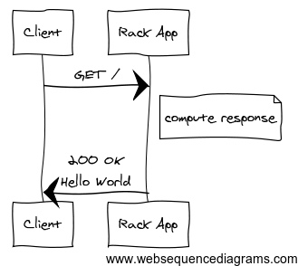
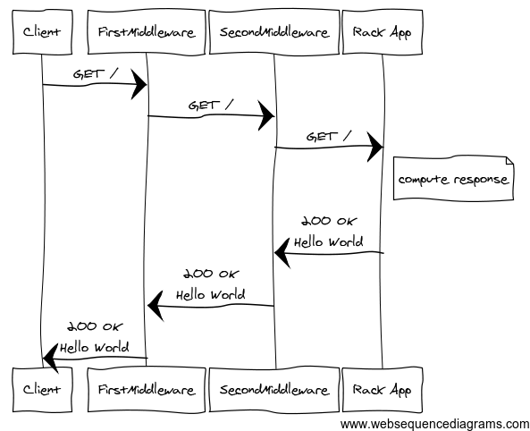
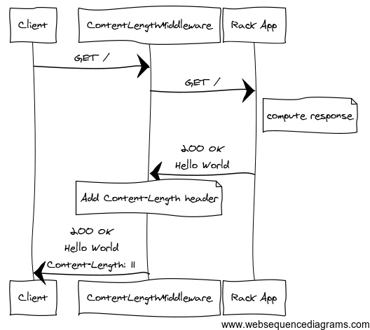
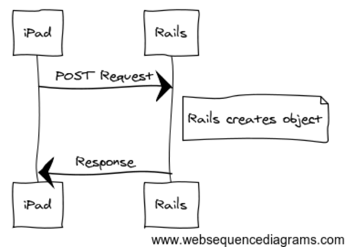
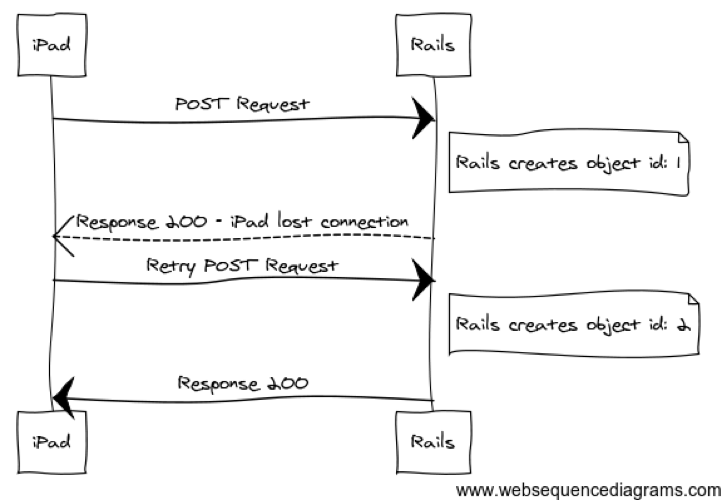
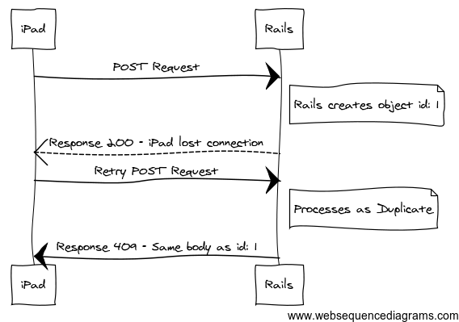
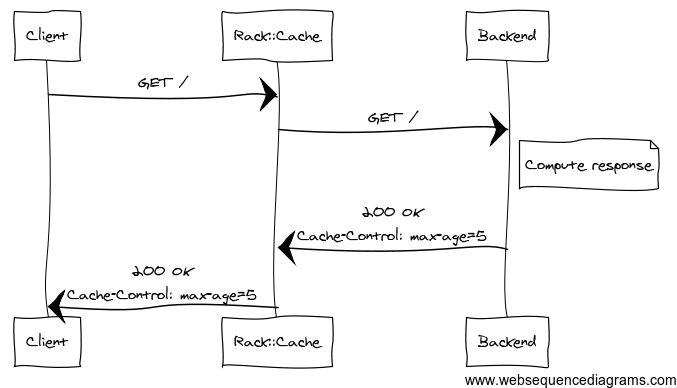
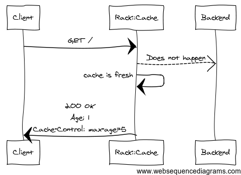

Rack provides a minimal interface between webservers supporting Ruby and Ruby frameworks.
Source: http://rack.github.io
Unified interface for all Ruby webservers to implement.
call
environment
each
{ "SERVER_SOFTWARE" => "thin 1.5.1 codename Straight Razor", "SERVER_NAME" => "localhost", "rack.input" => #<Rack::Lint::InputWrapper:0x007ff37cf1aa28 @input=#<StringIO:0x007ff37ceca730>>, "rack.version" => [1, 0], "rack.errors" => #<Rack::Lint::ErrorWrapper:0x007ff37cf1a3e8 @error=#<IO:<STDERR>>>, "rack.multithread" => false, "rack.multiprocess" => false, "rack.run_once" => false, "REQUEST_METHOD" => "GET", "REQUEST_PATH" => "/", "PATH_INFO" => "/", "REQUEST_URI" => "/", "QUERY_STRING" => "", "SERVER_PORT" => "5000", "SERVER_PROTOCOL" => "HTTP/1.1", "SCRIPT_NAME" => "", "HTTP_VERSION" => "HTTP/1.1", "HTTP_HOST" => "localhost:5000", "HTTP_CONNECTION" => "keep-alive", "HTTP_CACHE_CONTROL" => "max-age=0", "HTTP_ACCEPT" => "text/html,application/xhtml+xml,application/xml;q=0.9,image/webp,*/*;q=0.8", "HTTP_USER_AGENT" => "Mozilla/5.0 (Macintosh; Intel Mac OS X 10_8_4) AppleWebKit/537.36 (KHTML, like Gecko) Chrome/31.0.1612.2 Safari/537.36", "HTTP_ACCEPT_ENCODING" => "gzip,deflate,sdch", "HTTP_ACCEPT_LANGUAGE" => "en-US,en;q=0.8", # ...
$ cd examples/1 $ ls config.ru $ rackup -p 5000 $ thin start -p 5000 $ unicorn -p 5000
# examples/1/config.ru run lambda { |env| [200, {}, ['Hello World!']] }

# config.ru # NOTE: middleware are declared as a class not an instance use FirstMiddleware use SecondMiddleware run Application.new

# examples/3/config.ru class ContentLengthMiddleware def initialize(app) @app = app end def call(env) status, headers, body = @app.call(env) headers['Content-Length'] = body.inject(0) do |l, p| l + Rack::Utils.bytesize(p) end.to_s [status, headers, body] end end use ContentLengthMiddleware run lambda { |env| [200, {}, ['Hello World!']] }

# rails 4 app with Devise use ActionDispatch::Static use Rack::Lock use #<ActiveSupport::Cache::Strategy::LocalCache::Middleware:0x007ff9c2f32d48> use Rack::Runtime use Rack::MethodOverride use ActionDispatch::RequestId use Rails::Rack::Logger use ActionDispatch::ShowExceptions use ActionDispatch::DebugExceptions use ActionDispatch::RemoteIp use ActionDispatch::Reloader use ActionDispatch::Callbacks use ActiveRecord::Migration::CheckPending use ActiveRecord::ConnectionAdapters::ConnectionManagement use ActiveRecord::QueryCache use ActionDispatch::Cookies use ActionDispatch::Session::CookieStore use ActionDispatch::Flash use ActionDispatch::ParamsParser use Rack::Head use Rack::ConditionalGet use Rack::ETag use Warden::Manager run Sample::Application.routes
# config.ru require 'server' require 'middleware/custom_middleware' use CustomMiddleware run Server.new
# config/application.rb require 'middleware/custom_middleware' # pulling from lib/middleware # ... module Sample class Application < Rails::Application # ... config.middleware.use CustomMiddleware # last on stack config.middleware.insert 0, CustomMiddleware # first on stack config.middleware.insert_before ActionDispatch::Head, CustomMiddleware config.middleware.insert_after ActionDispatch::Head, CustomMiddleware config.middleware.swap ActionDispatch::Flash, CustomMiddleware config.middleware.delete ActionDispatch::Flash end end # config/envronments/development.rb Sample::Application.configure do config.middleware.use CustomMiddleware end
The Rails Router uses the same principle, every action is a Rack app
# This standard route get "/", to: "posts#index" # maps to get "/", to: PostsController.action(:index)
get "/sinatra/specific", to: "posts#index" mount SintraApp, at: "/sinatra" # other uses mount Sidekiq, at: "/sidekiq" mount Grape::API, at: "/api"



# examples/idempotent_post.rb module Rack class IdempotentPost # ... def call(env) return @app.call(env) unless env['REQUEST_METHOD'] == 'POST' dup_check = DuplicationChecker.new env if dup_check.duplicate? headers, body = dup_check.response [409, headers, body] else status, headers, body = @app.call(env) dup_check.cache_response(status, headers, body) [status, headers, body] end end # ... end end
# examples/idempotent_post_spec.rb describe Rack::IdempotentPost do include Rack::Test::Methods def app Rack::IdempotentPost.new(lambda do |env| @inner_app_called += 1 [200, {'Content-Type' => 'text/plain'}, ["Call Count #{@inner_app_called}"]] end) end # ... it "returns same response for same request" do post "/posts", { sample_data: 'sample_value' } first_repsonse = last_response.body post "/posts", { sample_data: 'sample_value' } second_response last_response.body second_response.should eq first_repsonse @inner_app_called.should eq 1 end end


# examples/4/config.ru use Rack::Cache run lambda { |env| headers = { 'Cache-Control' => 'max-age=5, public' } [200, headers, ["Hello at: #{Time.now}"]] }
# app/controllers/posts_controller.rb def index @posts = Post.all fresh_when(@posts.maximum(:updated_at), public: true) end def show @post = Post.find(params[:id]) if stale?(@post, public: true) respond_to do |format| format.html # show.html.erb format.json { render json: @post } end end end def archive @post = Post.archived expires_in 3.days, public: true end
# app/controllers/posts_controller.rb def index @posts = Post.all respond_to do |format| format.html format.xml { fresh_when(@posts.maximum(:updated_at), public: true) } end end
# config/environments/test.rb # SAMPLE URL: http://example.dev?as=100 class DeviseBackDoor # ... def call(env) if user_id = Rack::Utils.parse_query(env['QUERY_STRING'])['as'] user = User.find(user_id) @env['warden'].session_serializer.store(user, :user) end @app.call(env) end end Sample::Application.configure do # ... config.middleware.use DeviseBackDoor end
root_url(as: @user.id)
# examples/5/config.ru use Rack::Deflater run lambda { |env| content = <<-TEXT Need some longish content to compress. If content is too short compressing adds overhead because of Gzip headers. TEXT [200, {}, [content]] }
# examples/6/config.ru # ~1MB of content use Rack::Deflater run lambda { |env| [200, {}, [File.read('./lots_o_content.txt')]] }
/